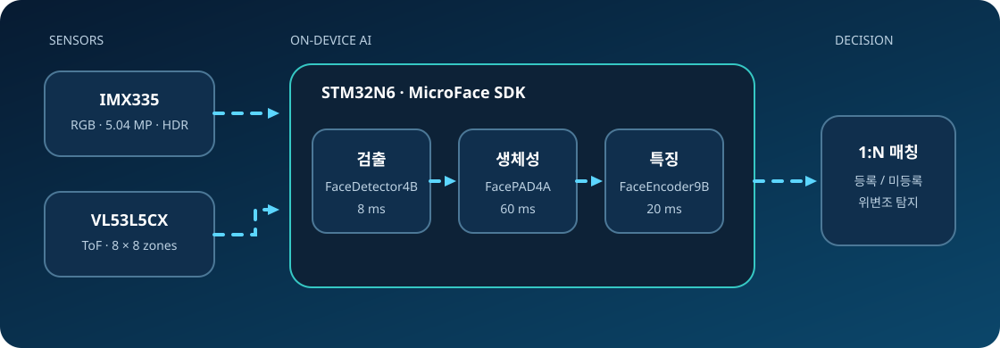

로컬 처리
얼굴 특징과 판정을 장치 내부에서 다뤄 네트워크 의존성과 응답 변동을 줄입니다.
01 · Technical guide
카메라와 ToF 센서의 정보를 한 개의 MCU에서 처리해, 얼굴 검출·생체성 확인·특징 추출·1:N 식별까지 수행하는 엣지 AI 데모입니다.
One sentence
id3 MicroFace SDK를 STM32N6의 Neural-ART NPU에 최적화하여, 서버나 외부 가속기 없이 로컬에서 얼굴 식별 흐름을 완성합니다.

Why it matters
얼굴 특징과 판정을 장치 내부에서 다뤄 네트워크 의존성과 응답 변동을 줄입니다.
RGB 외형 정보에 8×8 ToF 깊이 단서를 더해 PAD 판단을 보강합니다.
Cortex-M55와 Neural-ART를 한 칩 안에서 조합해 제어와 AI 추론을 수행합니다.
한 얼굴의 등록 템플릿은 148 bytes 미만으로 제시되어 로컬 DB 구성에 유리합니다.
Numbers at a glance
각 수치는 기능별 공개 결과입니다. 병렬 처리, 데이터 준비, UI 출력 조건이 공개되지 않아 단순 합으로 전체 응답시간을 확정할 수 없습니다.
Glossary
발표 중 자주 등장하는 표현을 짧게 정리했습니다.
세 모델명, 센서 구성, 성능·메모리 수치, Neural-ART 가속은 ST 공식 case study에 공개되어 있습니다.
정확한 네트워크 layer, 유명 모델 계열 여부, embedding 차원과 거리 함수는 공개되지 않았습니다.